我是前言
在北方想有点时间就去北京的各大博物馆开开眼界，第四站——福州新馆！就快要回家了，7.5 逛一逛有点闽粤风味的展馆。
逛完差不多就可以回冀大了。
我是正文
12:47 我出发了
{kind=link}
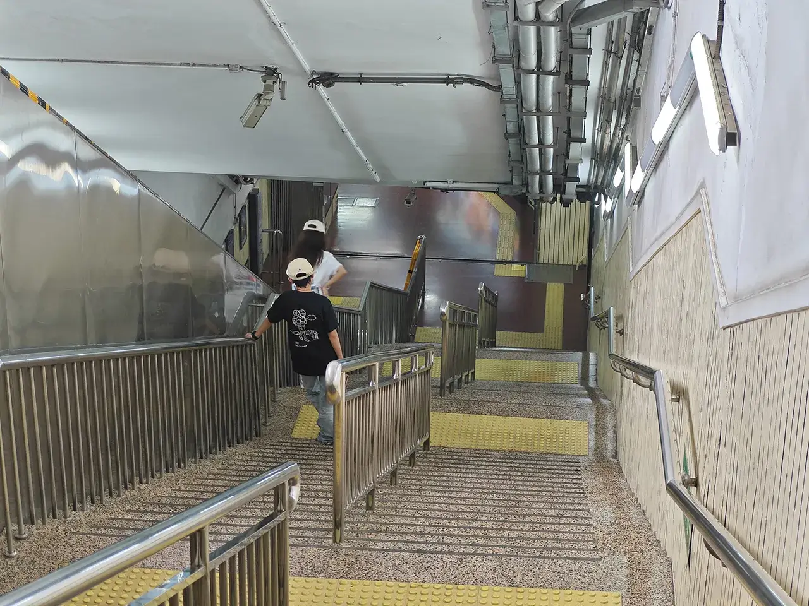
建国门- 2 号线-宣武门- 4 号线-菜市口-7 号线-虎坊桥，￥3。
这个地铁 2 号线还真有上世纪的风味啊！
13:22 我进去了
{kind=link}
{kind=link}
虽是叫“福州新馆”，建筑风格却仍是北方特色。又矮又丑。
创建于清嘉庆二十一年（1816），为林则徐在京任职期间筹资购置，曾是清代福建同乡居停聚会之处，现为西城区不可移动文物，占地面积 6659 平方米，建筑面积 466 平方米。
林则徐在京生活的七年（1813-1820）中主要居住在宣武门以南地区（宣南），福州新馆是其重要活动场所，此时也是“苟利国家生死以，岂因祸福避趋之”爱国情怀形成的重要时期，清道光年间鸦片泛滥，民弱国帅，居住在宣南的士子激于忧患，奋起疾呼，要求禁烟强国，道光十八年（1838），黄爵滋上禁烟疏，主张严禁鸦片，林则徐连续八次力陈，促成道光皇帝决定禁烟，道光十九年（1839），林则徐虎门销烟的壮举向世界展示了中国民众反抗外来压迫的斗志。
2019 年 12 月，北京市政府完成福州新馆修缮和布展，场馆对公众开放，以弘扬林则徐伟大的爱国精神和威武不屈的民族气节，鼓舞中国人民为实现中华民族伟大复兴不懈奋斗。
看介绍，这是舅公的爷爷的爷爷的爷爷的老丈人在北京买的房子😬！时期还是在虎门销烟前将近二十来年，也就是说，这个福州新馆其实跟大名鼎鼎的虎门销烟及之后的事件没啥关系。
当官的生活还是滋润啊，这房子放到现在不得价值破亿🤑。
{kind=link}
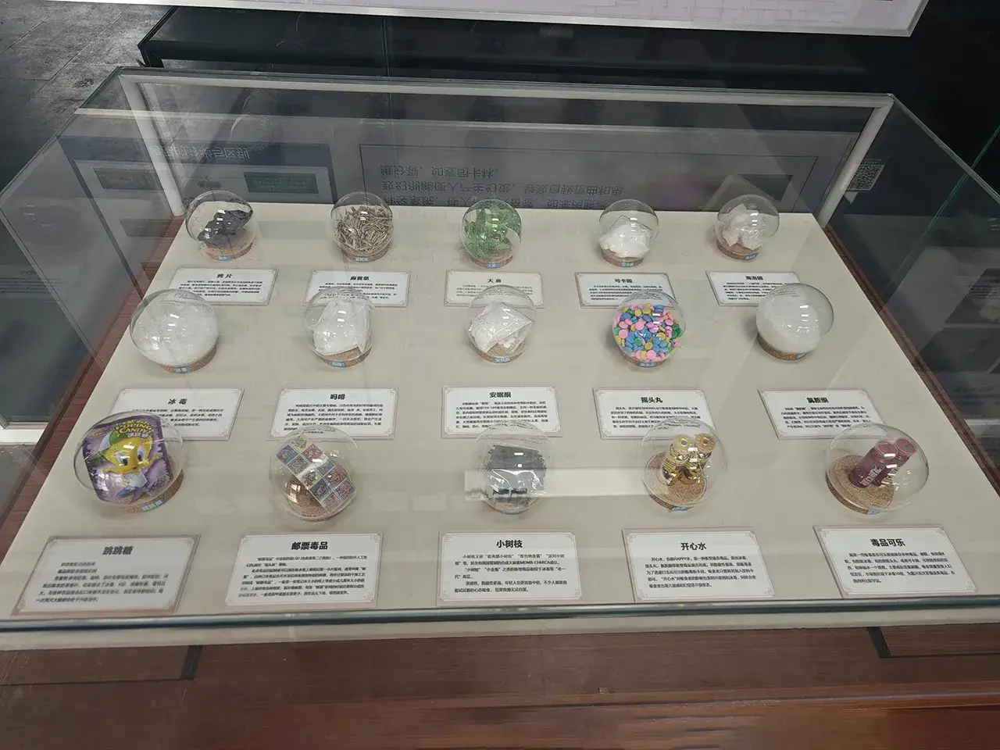
看来这个馆目前主要是给北京的小学生做禁毒教育用。林则徐作为一个忠于国家并且做出虎门销烟这种具有代表性事件的人物，他的事迹是个爱国教育和禁毒教育的极佳案例！
里面一股油漆味！京爷居然在禁毒馆里放毒😭。
{kind=link}
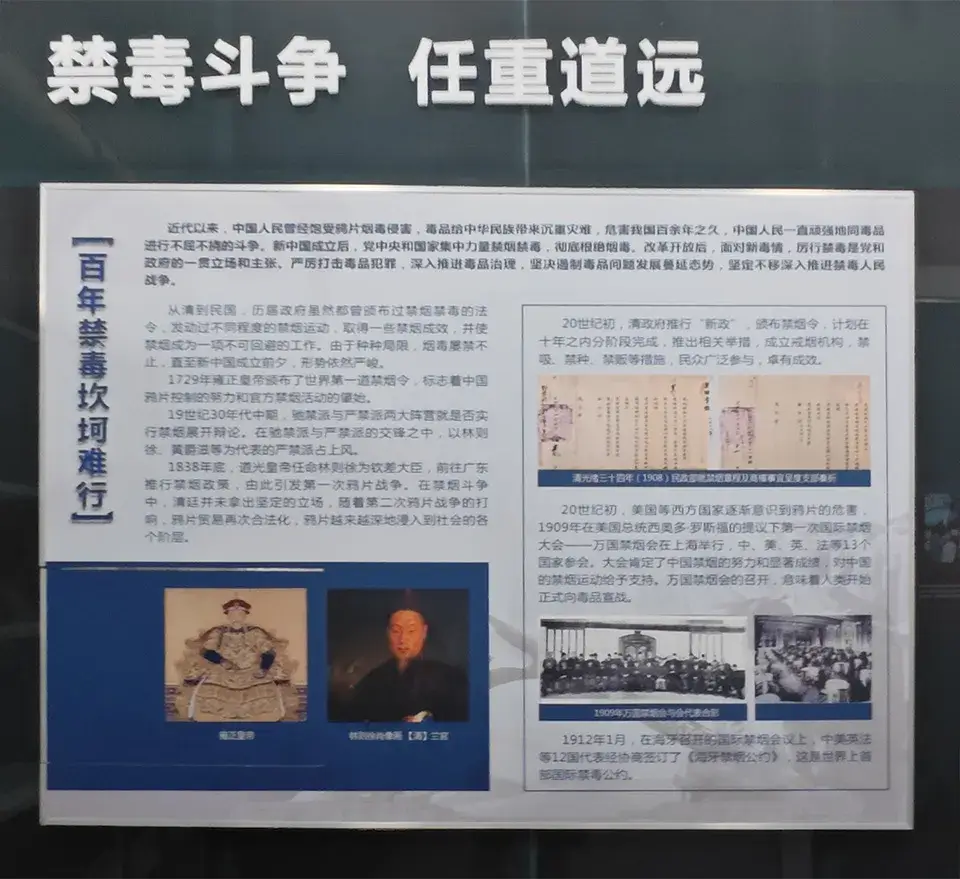
近代以来，中国人民曾经饱受鸦片烟毒侵害，毒品给中国民族带来沉重灾难，危害我国百余年之久，中国人民一直顽强地同毒品进行不屈不挠的斗争。新中国成立后，党中央和国家集中力量禁烟禁毒，彻底根除烟毒。改革开放后，面对新毒情，厉行禁毒是党和政府的一贯立场和主张。严厉打击毒品犯罪，深入推进毒品治理，坚决遏制毒品问题发展蔓延态势，坚定不移深入推进禁毒人民战争。
从清到民国，历届政府虽然都曾颁布过禁烟禁毒的法令，发动过不同程度的禁烟运动，取得一些禁言成效，并使禁言成为一项不可回避的工作。由于种种局限，烟毒屡禁不止。直到新中国成立前夕，形式依然严峻。 1729 年雍正皇帝颁布了世界第一道禁烟令，标志着鸦片控制的努力和官方禁烟活动的肇始。 19 世纪 30 年代中期，驰禁派与严禁派两大阵营就是否实行禁烟展开辩论。在驰禁派与严禁派的交锋之中，以林则徐、黄爵滋等为代表的严禁派占上风。 1838 年底，道光皇帝任命林则徐为钦差大臣，前往广东推行禁烟政策，由此引发第一次鸦片战争。在禁烟斗争中，清廷并未拿出坚定的立场，随着第二次鸦片战争的打响，鸦片贸易再次合法化，鸦片越来越深地浸入到社会的各个阶层。
20 世纪初，清政府推行“新政”，颁布禁烟令，计划在十年之内分阶段完成，推出相关举措，成立禁烟机构，禁吸、禁种、禁贩等措施，民众广泛参与，卓有成效。
20 世纪初，美国等西方国家逐渐意识到鸦片的危害，1909 年在美国总统西奥多 · 罗斯福的提一下第一次国际禁烟大会——万国禁烟会在上海举行，中、美、英、法等 13 个国家参会。大会肯定了中国禁烟的努力和显著成绩，对中国的禁烟运动给予支持。万国禁烟会的召开，意味着人类开始正式向毒品宣战。
1912 年 1 月，在海牙召开的国际禁烟会议上，中美英法等 12 国代表经协商签订了《海牙禁言公约》，这是世界上首部国际禁言公约。
{kind=link}
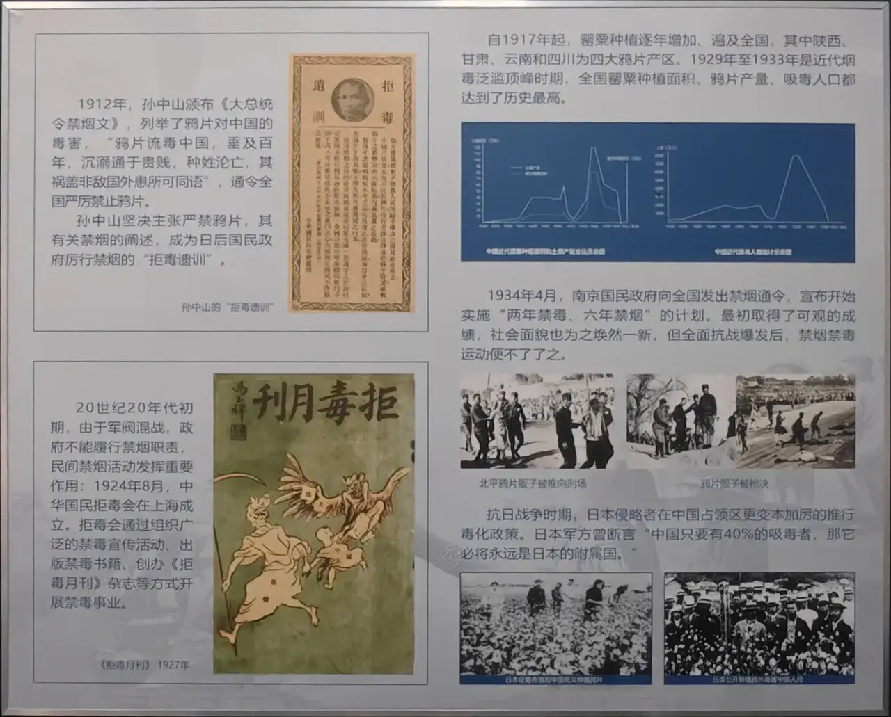
1912 年，孙中山颁布《大总统令禁烟文》，列举了鸦片对中国的毒害，“鸦片流毒中国，垂及百年，沉溺通于贵贱，种姓沦亡，其祸盖非敌国外惠所可同语”，通令全国严厉禁止鸦片。 孙中山坚决主张严禁鸦片，其有关禁烟的阐述，成为日后国民政府厉行禁烟的“拒毒遗训”。
20 世纪 20 年代初期，由于军阀混战，政府不能履行禁烟职责，民间禁烟活动发挥重要作用：1924 年 8 月，中华国民拒毒会在上海成立。拒毒会通过组织广泛的禁毒宣传活动、出版禁毒书籍、创办《拒毒月刊》杂志等方式开展禁毒事业。
自 1917 年起，罂粟种植逐年增加、遍及全国，其中陕西甘肃、云南和四川为四大鸦片产区。1929 至 1933 年是近代烟毒泛滥顶峰时期，全国罂粟种植面积、鸦片产量、吸毒人口都达到了历史最高。
1934 年 4 月，南京国民政府向全国发出禁烟通令，宣布开始实施“两年禁毒、六年禁烟”的计划。最初取得了可观的成绩，社会面貌也为之焕然一新，但全面抗战爆发后，禁烟禁毒运动便不了了之。
抗日战争时期，日本侵略者在中国占领区更变本加厉的推行毒化政策。日本军方曾断言“中国只要有 40% 的吸毒者，那它必将永远是日本的附属国”。
{kind=link}
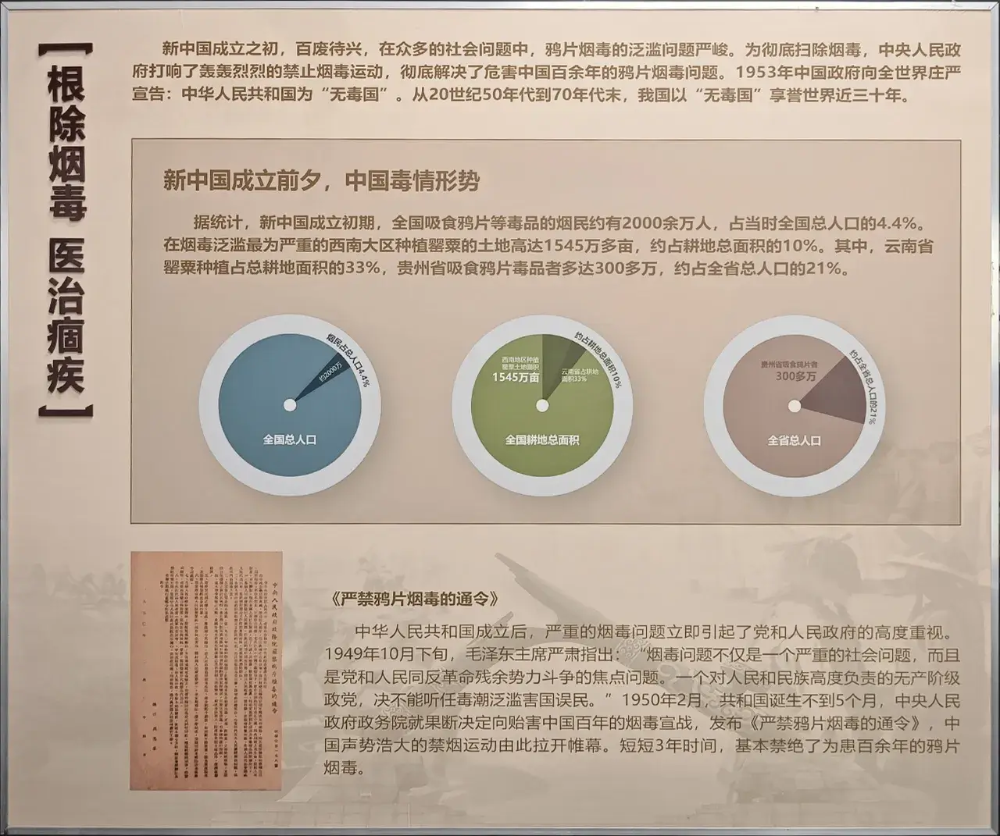
新中国成立之初，百废待兴，在众多的社会问题中，鸦片烟毒的泛滥问题严峻。为彻底扫除烟毒，中央人民政府打响了轰轰烈烈的禁止烟毒运动，彻底解决了危害中国百余年的鸦片烟毒问题。1953 年中国政府向全世界庄严宣告：中华人民共和国为“无毒国”。从 20 世纪 50 年代到 70 年代末，我国以“无毒国”享誉世界近三十年。
{kind=link}
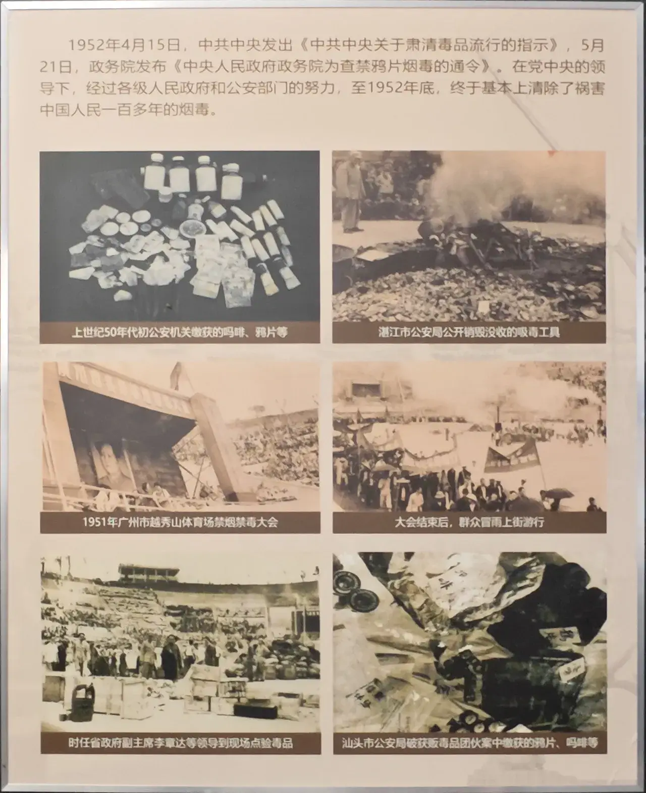
1952 年 4 月 15 日，中共中央发出《中共中央关于肃清毒品流行的指示》，5 月 21 日，政务院发布《中央人民政府政务院为查禁鸦片烟毒的通令》。在党中央的领导下，经过各级人民政府和公安部门的努力，至 1952 年底，终于基本上清除了祸害中国人民一百多年的烟毒。
{kind=link}
{kind=link}
{kind=link}
{kind=link}
1839 年 3 月 10 日（道光十九年正月廿五），林则徐正式抵粤，受九响礼炮之礼，所有广东高官皆来迎接。美国商人威廉·亨特（William C . Hunter，1812 年－1891 年 6 月 25 日）也在附近观礼，他留下了有关林则徐相貌的重要文献：“**气度庄重，表情相当严厉，身材肥胖，上唇浓密的黑短髭，下巴留着长髯，**看来六十岁左右。”林则徐首先参观越华书院，并提写一副对联：“海纳百川，有容乃大；壁立千仞，无欲则刚”。林则徐还拜访了熟悉西方事务的梁廷枏。
{kind=link}
{kind=link}
{kind=link}
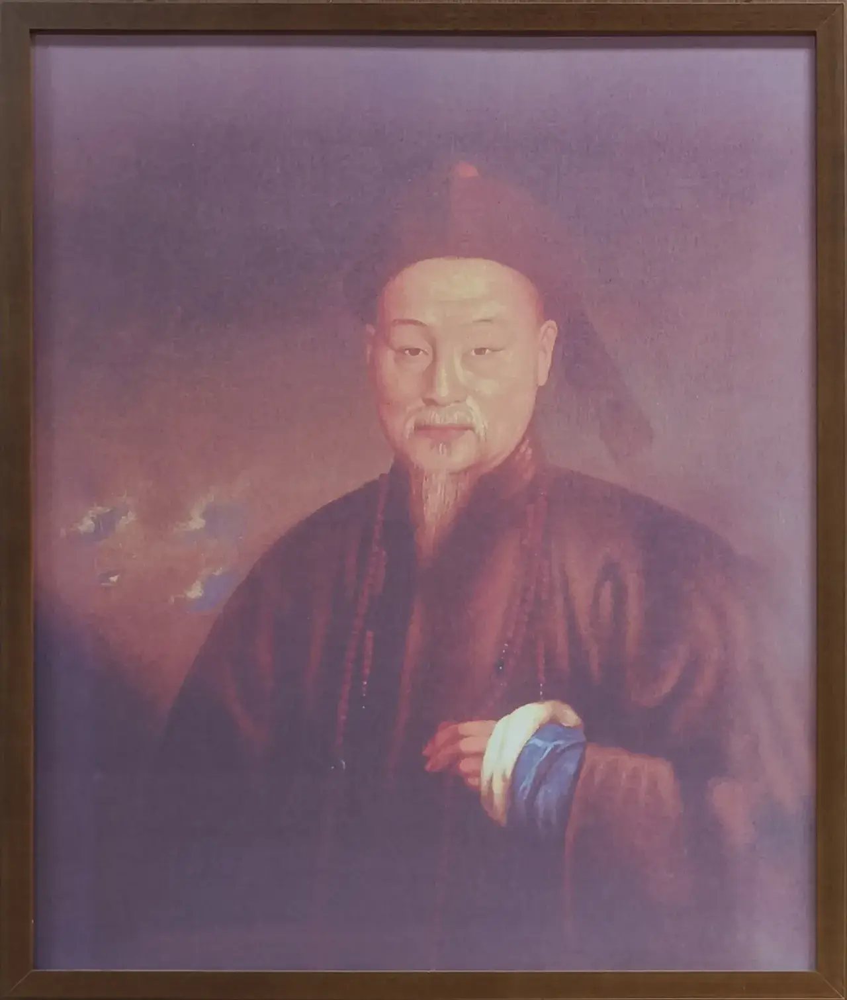
这个画像印刷的质量太差了😠！
林则徐（1785 年 8 月 30 日－1850 年 11 月 22 日），福建省侯官（今福州市区）人，字元抚，又字少穆、石麟，晚号俟村老人、俟村退叟、七十二峰退叟、瓶泉居士、栎社散人等，是清朝时期的政治家、思想家和诗人，官至一品，曾任湖广总督、陕甘总督和云贵总督，两次受命钦差大臣；因其主张严禁鸦片，在中国有“民族英雄”之誉。
一品大官😍！
{% tabs 生平 %}
乾隆五十年（1785）七月二十六日，出生于福建侯官左营司巷林氏北院后祖室。
福州市鼓楼区中山路 19 号。
嘉庆三年（1798），考中秀才，就读鳌峰书院。
五中旁边~
嘉庆九年（1804）秋，参加乡试，中举。
嘉庆十二年（1807）春，入福建巡抚张师诚幕府。
嘉庆十六年（1811）春，第三次参加会试，以殿试二甲第四名朝考第五名成进士。
嘉庆二十一年（1816）闰六月，派充江西乡试副考官。
嘉庆二十四年（1819）闰四月二十七日，派充云南乡试正考官。
嘉庆二十五年（1820）二月初八日，任江南道监察御史转浙江杭嘉湖道，任上修海塘、兴水利、发展农业。
道光三年（1823）正月初七日，任江苏按察使，整顿吏治、清理积案。
道光七年（1827）五月初一日，任陕西按察使、署布政使事。
道光十年（1830），丧父服阙。闰四月初七日，进京觐见候缺。六月二十九日，任湖北布政使。
道光十一年（1831）二月二十九，出任河南布政使。
道光十二年（1832），调任江苏巡抚，对农业、务、水利、救灾、吏治各方面做出成绩。
道光十七年（1837）正月二十二日，升湖广总督，任内禁鸦片，卓有成效。
道光十八年（1838）回京，受命为钦差大臣，赴广东查禁鸦片。
道光十九年（1839）六月三日，在虎门海滩公开销烟，共销毁鸦片 2376254 斤。
没收😡！销毁😡！
道光二十年（1840）六月，鸦片战争开始后，英军攻粤闽未逞，改攻浙江，陷定海，再北侵大沽。道光帝惊恐求和，归咎林则徐在广东“办理不善”，屡次下旨斥责。九月林则徐被革职。
被揍了😵。我道光帝英明神武是不可能犯错的，只能拿别人背锅了😵。
道光二十一年（1841）三月，受命赴浙江协办海防。五月道光帝以广东战败，归咎前任，林则徐被革去四品卿衔，从重惩处，充军伊犁。到任后，在新疆兴办水利，垦辟屯田。
直接从东南扔到西北😵。因祸得福的是，如果林则徐没有被贬，继续在广州抗英，必然吃败仗，那么历史对他的评价或许会改变。
道光二十五年（1845），被重新起用署陕甘总督。次年转任陕西巡抚。次年升云贵总督。
道光三十年（1850），病逝于潮州普宁县行馆（今广东普宁北），享年 66 岁。
66 岁了还不让人退休，把人累死了😭。
{% endtabs %}
禁毒英雄林则徐 林则徐，中国近代史上“禁毒先驱”也是近代中国最具开拓精神的“开眼看世界”的人。由林则徐主持的虎门销烟，是近代史上中国人民禁烟斗争取得的伟大胜利，有力伸张了中华民族的浩然正气，充分体现了中国人民严禁毒品的决心和反抗外来侵略的坚强意志，在中国近代史和世界禁毒史上书写下光辉的一页。 林则徐的著名诗句：“苟利国家生死以，岂因祸福避趋之”。不仅表达了林则徐的理想信念，更是他崇高一生的真实写照。 云思往事，追忆先贤；不忘历史，寄望未来。在中华民族伟大复兴的接力定能继往开来，一棒再接一棒。
{kind=link}
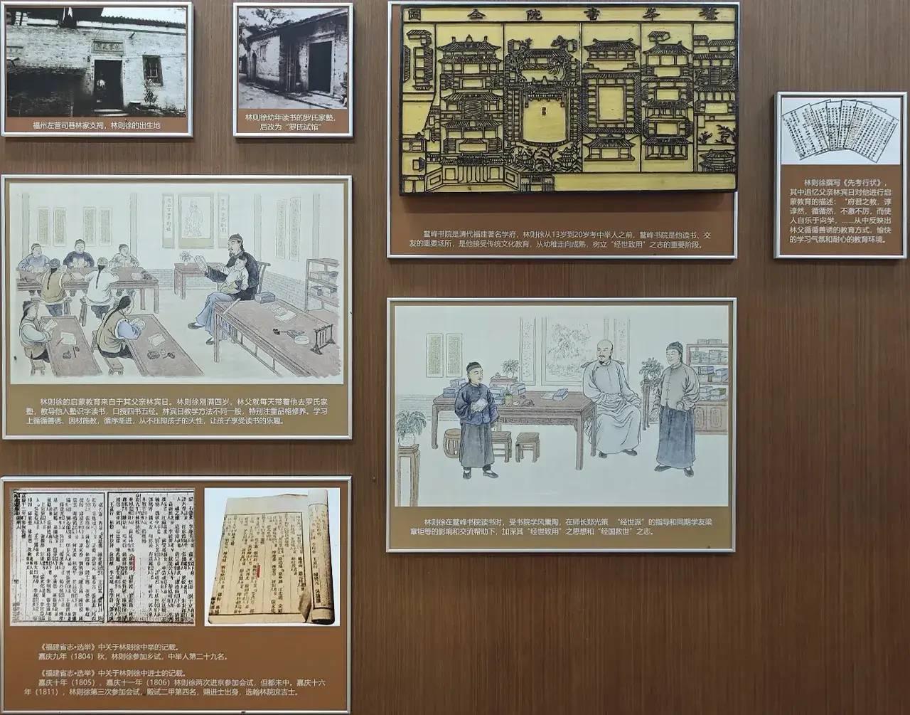
清乾隆年间，林则徐生于福州城一户清贫的读书人家。他从小便聪颖勤奋，在良好的家庭启蒙和父母的谆谆教导之下，在书院学风的熏陶之下，熟读儒家经典，学写诗文，为其日后的品格修养与为人、为学、为事之道打下扎实的基础。
{kind=link}
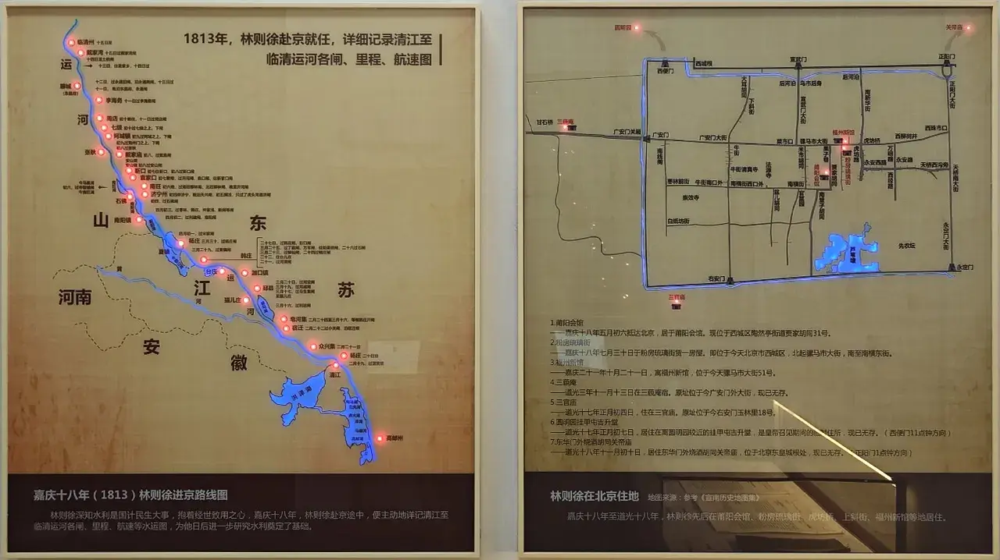
嘉庆十七年（1812），林则徐进京赴任，开始长达七年的在京为官生涯。在京期间，他开阁眼界，丰富知识，通于政事，经世思潮高涨。道光年间，他先后出任河东道总督、江苏巡抚，署理两江总督，担任湖广总督等。在任期间，林则徐爱国，勤于政事，关心民生，事必躬行，以求实务实、经世致用的思想施展其政治抱负。
福州新馆是林则徐与友人议事、设宴、聚会的主要场所。林则徐不仅长期参与福州新馆的活动，而且为福州新馆的筹建出力甚多。从经费筹措到购屋，及后来的运行等，付出很多辛劳。馆中主要建筑物“榕荫堂”，取福州多榕树、庇佑乡亲之意，体现了林则徐注重乡谊之情。
看来林则徐也是一个恋家的家伙🥴，我并没有看出哪个建筑是“榕荫堂”。
{kind=link}
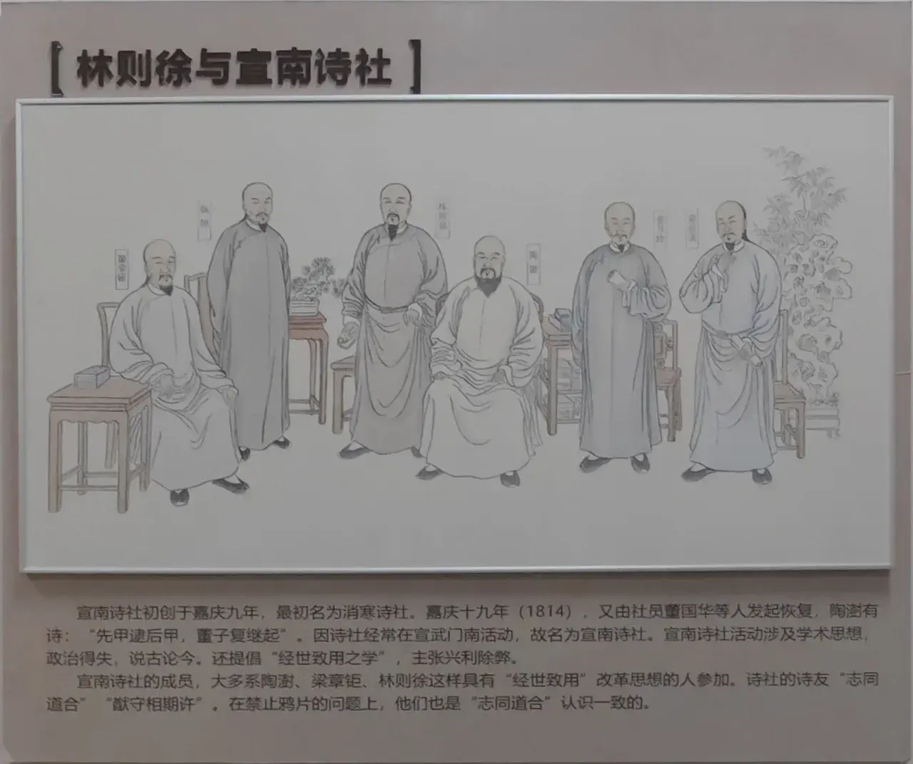
宣南诗社初创于嘉庆九年，最初名为消寒诗社。嘉庆十九年（1814），又由社员董国华等人发起恢复，陶有诗:“先甲逮后甲，董子复继起”。因诗社经常在宣武门南活动，故名为宣南诗社。宣南诗社活动涉及学术思想政治得失，说古论今，还提倡“经世致用之学”，主张兴利除。 宣南诗社的成员，大多系陶澍、梁章钜、林则徐这样具有“经世致用”改革思想的人参加。诗社的诗友“志同道合”“猷守相期许”在禁止鸦片的问题上，他们也是“志同道合”认识一致的。
{kind=link}
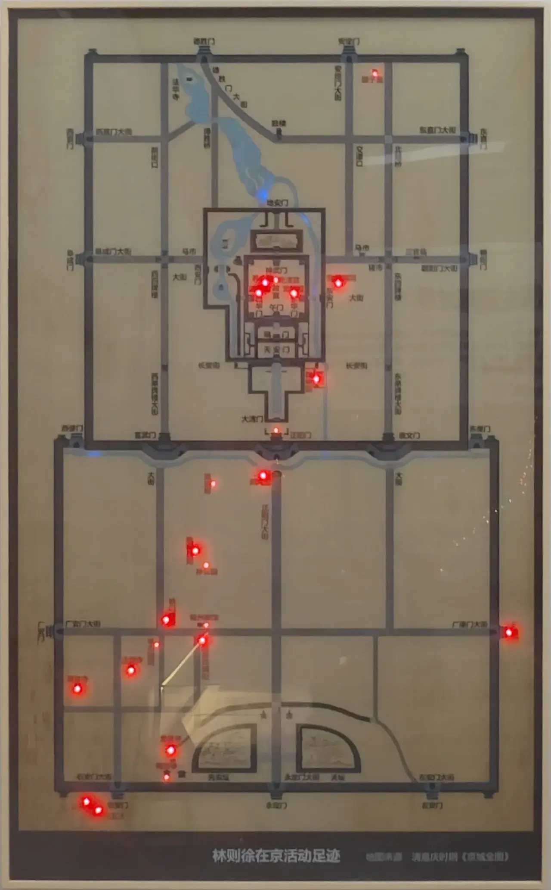
看来，在虎门销烟以前，林公就在北京混得风生水起了。
{kind=link}
{kind=link}
{kind=link}
秀一秀林则徐的之前的政绩。
这些政绩要是后来没有虎门销烟的加持，就不会被后人所记住了。
{kind=link}
{kind=link}
{kind=link}
19 世纪初，英国向中国大里输入鸦片，给中国社会带来了无穷的祸患。清嘉庆、道光年间，就开始严禁吸食鸦片和严禁鸦片贸易，导致鸦片走私现象严重。为了遏制鸦片流毒，清道光十八年（1838），钦差大臣林则徐受命赴广东查禁鸦片，并亲自在虎门主持了震惊中外的销烟行动。虎门销烟的伟大壮举，充分显示了中国人民禁毒的坚定决心和反抗外来侵略的坚强意志，谱写了近代史上中国人民反对外国侵略的第一页，并成为国际禁毒史上的一座丰碑。 林则徐自京出发，沿途不断考察民情和征求各方意见。期间，林则徐颁发呈缴鸦片章程，收缴烟土烟枪事宜，及收缴趸船烟箱等事宜。在虎门期间，林则徐、邓廷桢、关天培等经常会面，研究追缴鸦片和处理鸦片问题，及布置收烟工作。一直到四月十八日，林则徐奉谕旨销烟，于是有了虎门海滩轰轰烈烈的销烟运动。
一座丰碑！虎门销烟的事迹被刻在了人民英雄纪念碑上。
{kind=link}
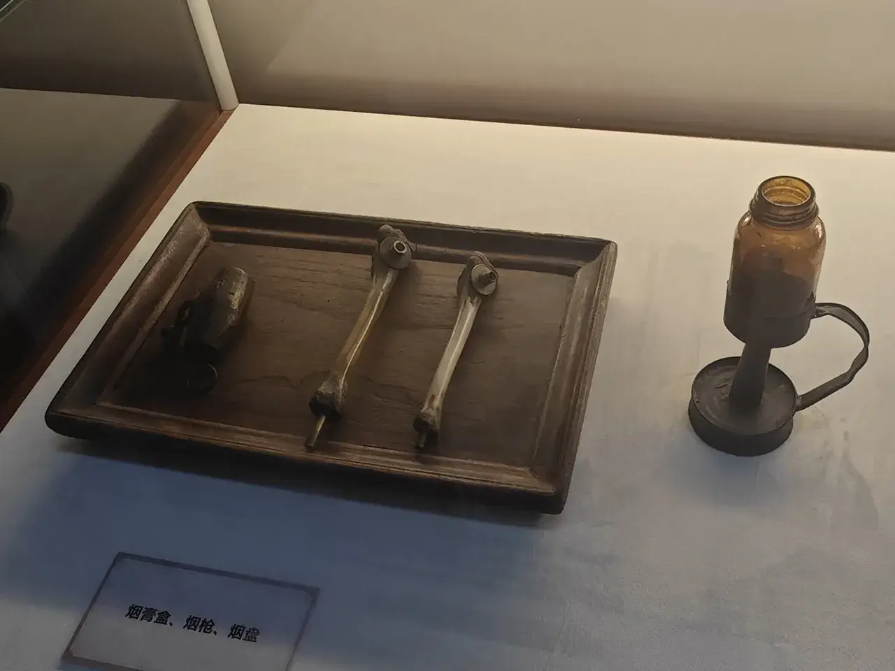
{kind=link}
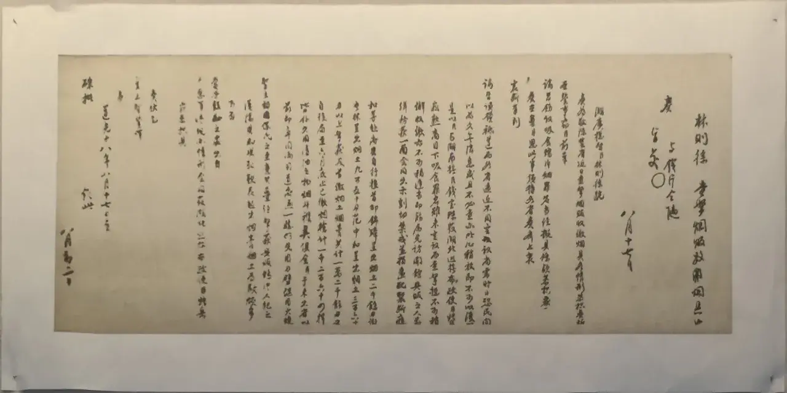
{kind=link}
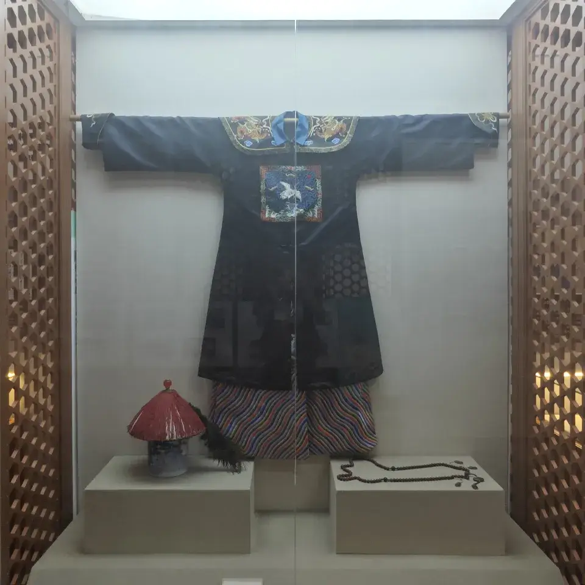
{kind=link}
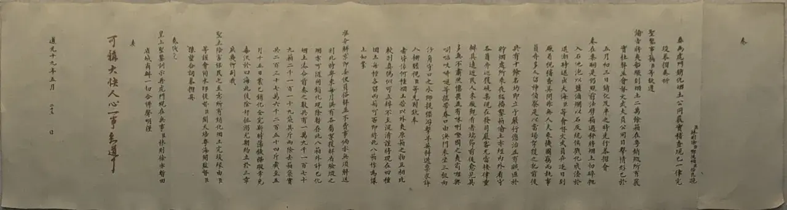
{kind=link}
{kind=link}
{kind=link}
{kind=link}
道光帝看到奏折后颇为赞许，朱批：“可称大快人心一事，知道了。”
{kind=link}
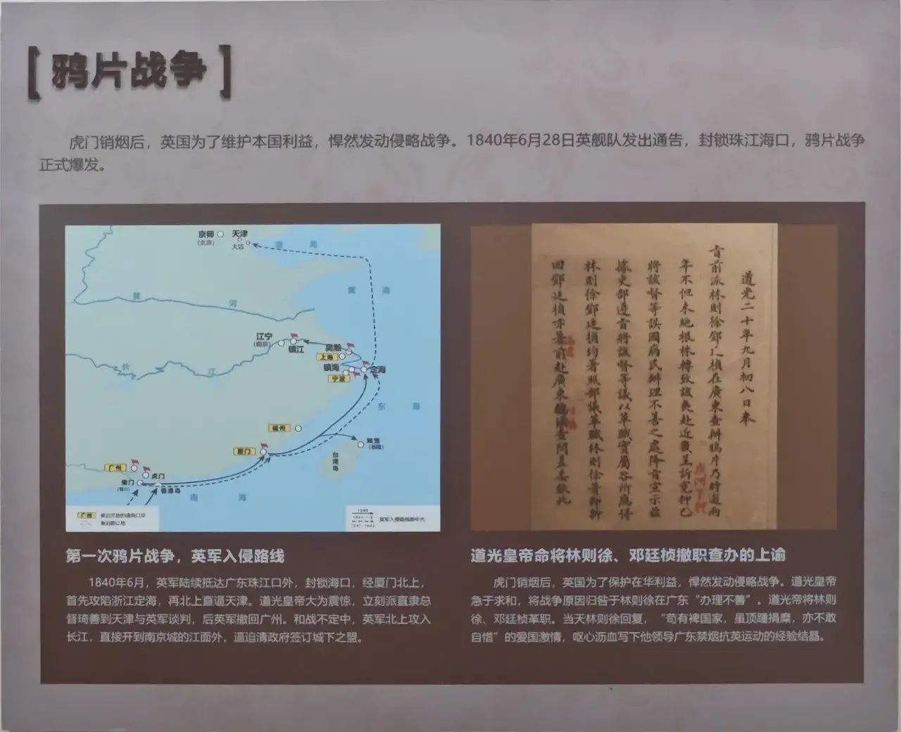
虎门销烟后，英国为了维护本国利益，悍然发动侵略战争。1840 年 6 月 28 日英舰队发出通告，封锁珠江海口，鸦片战争正式爆发。
“大快人心一事”结束后，英国借此机会找事！不过就算没有虎门销烟，以后也会有其他的理由冒出来找事😅。
{kind=link}
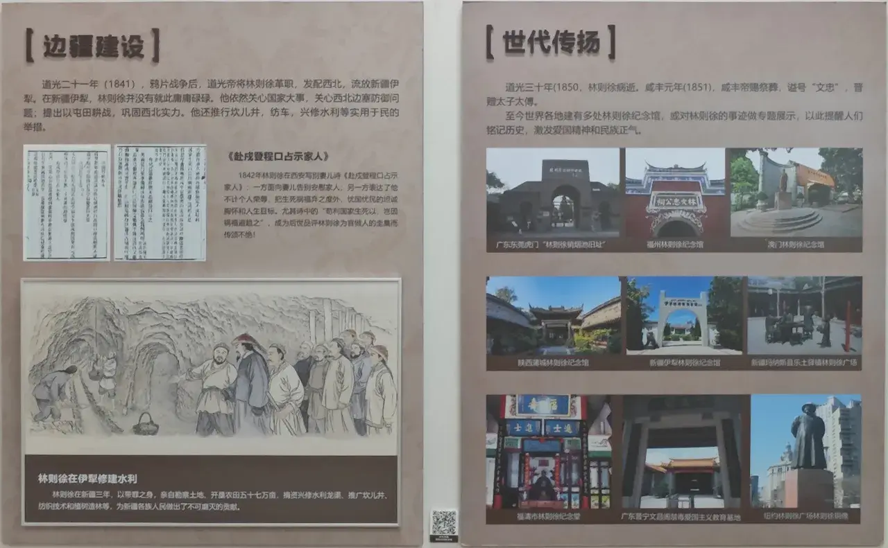
跑路了😇！广州这个烂摊子就交给关天培等人了！
林则徐谥号“文忠”，和李鸿章谥号相同。
16:06 我回去了
{kind=link}
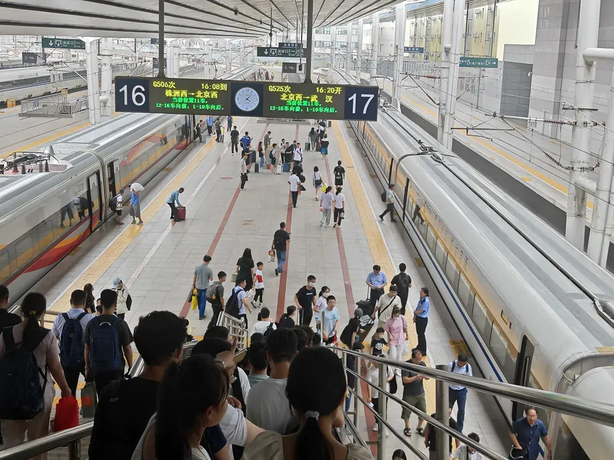
车票 G525：16:20 北京西-17:01 保定东，￥63。
时间还充裕，不过我打算结束今天的行程，在车站里休息好了。
{kind=link}
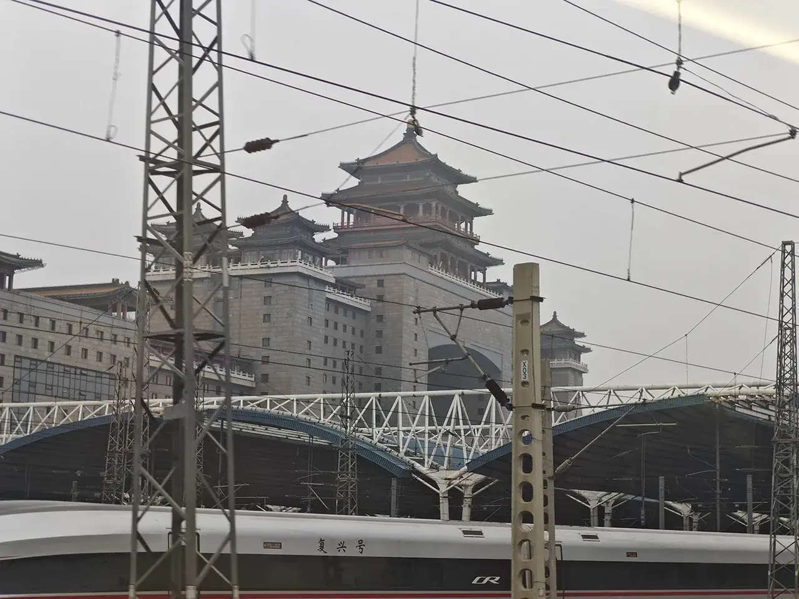
由于还是下午，还能看一看窗外的景色。
{kind=link}
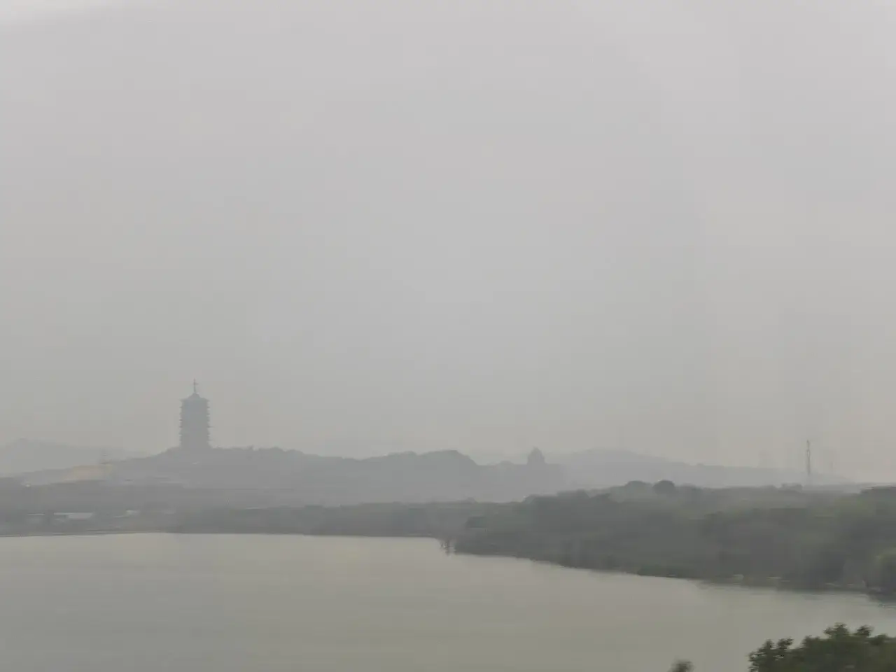
啊！可爱小雾霾太严重了🤧！
{kind=link}
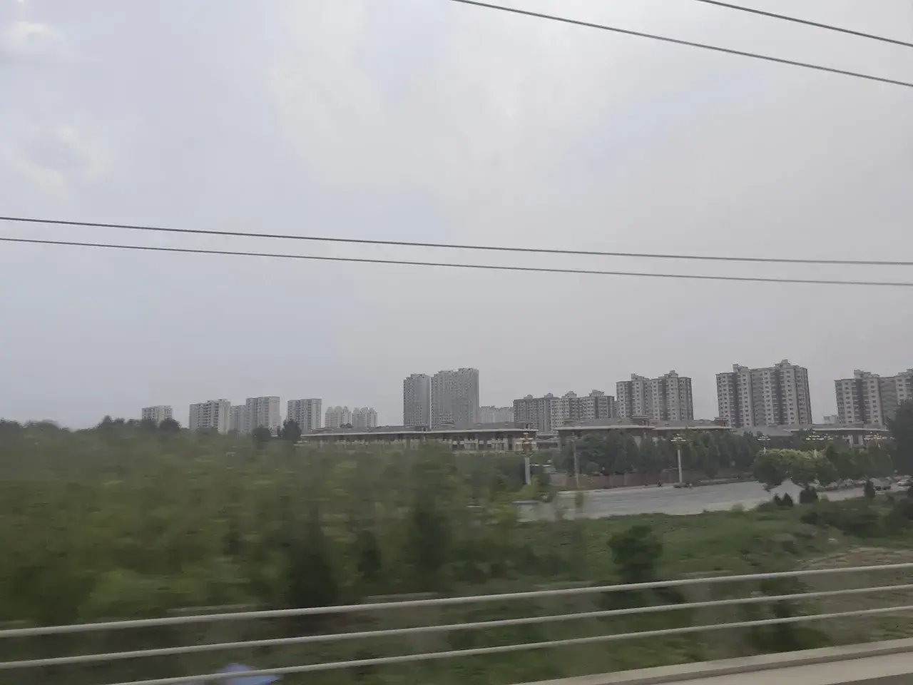
保定下辖的某县级市，高铁站附近布满了高密度住宅，看上去还挺繁华的，或许只是方便里面的住户进京打工吧。
接下来下车，坐公交，回冀大，吃饭，躺尸，一气呵成。